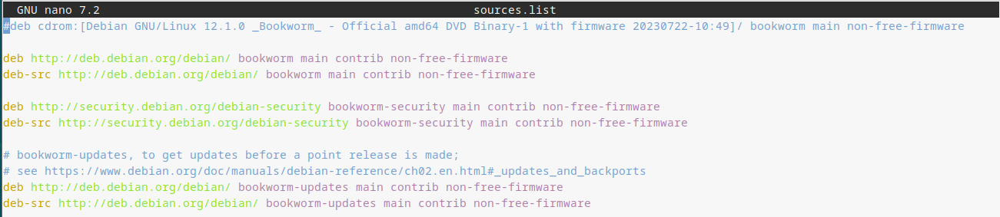

| SM1: Open-source Operating Systems | ASIX/DAW/DAM-1 |
Task A1: Initial installations and configuration of Virtualbox and Debian GNU/Linux | 18-09-2023 |
What
is a Virtual Machine?
1- A Virtual Machine (VM) is
* A virtual
computer and it means that
it uses virtual
hardware.
* A virtual computer is made of a set of
files stored in a physical machine (also called "host"
machine).
* Virtual hardware are CPU, RAM, Drives,
etc made of files stored in a host
machine.
* Virtual machines are also called
"guest machines" of a "host machine".
* Each virtual machine runs its own operating
system and applications separately from the other VMs and
the host machines. A virtual machine in fact is
another computer running inside the host machine.
* You can run different operating
systems in different virtual machines running on a
host machine. This means
that, for
example, a virtual MacOS virtual
machine can run on a physical PC working with Linux.
What are virtual machines used for?
Virtual machines (VMs) allow a business to:
* run an operating system that behaves like a
completely separate computer in an app window
on a desktop.
* run software that requires a different
operating system
* test applications in a safe and isolated environment.
* Improve efficiency => Saving physical hard
drive space, time and managements costs
* Perform specific tasks considered too risky to carry out in a host environment, such
as accessing virus-infected data or testing operating systems.
* run multiples operating systems on a
single physical computer
* run legacy (old version)
applications => Reducing migration to a new operating
system costs
* Easy management and maintenance of
multiple operating syste
3- Install VirtualBox:
The Guest Additions are designed to be
installed inside a
virtual machine after the guest operating system has been
installed. They consist of device drivers and system
applications that optimize the guest operating system for
better performance and usability.
The Guest Additions offer the following features:
12- Shutdown your system in the right way. Select System
--> Shut Down --> Shutdown.
13-
Eject the VBoxGuestAdditions.iso
cdrom image:
13- Boot
(Start) Debian GNU/Linux. Gain access to
your Desktop.
14- Resize
your window and your Desktop with the help of your mouse.
15- Power off your system in the right way. Select System --> Shut Down --> Shut Down.
3.3- ADD NEW
REPOSITORIES TO YOUR PACKAGE MANAGER
0- Before starting:
- A software package contains all of the files required to install or unistall programs on Debian GNU/Linux
A package manager keeps track of what software is installed on your computer, and allows you to easily install new software, upgrade software to newer versions, or remove software that you previously installed. The job of a package manager is to present an interface which assists the user in managing the collection of packages installed on his or her system.
- A software repository is a storage location for software packages. An external hard drive, a DVD/CDROM or a Shared Folder in a computer (repository server) in the LAN or Internet could be a software repository. Debian GNU/Linux have many mirrors (an image or clone of a main repository server) around the world. Usually, a computer downloads software packages from a software repository with the help of package manager. The package manager will install the software package in the systeme as well.
- aptitude is a package manager and it reads the list of software repositories or "sources" from the file /etc/apt/source.list.
- Update and upgrade --> https://linuxconfig.org/apt-update-vs-apt-upgrade
1- As a root
user, change /etc/apt/sources.list in order to add
the contrib and non-free repository
addresses (or sources). Adding these new
repositories allows the system to gain access to
some extra useful software packages. The new sources.list
file should have the following contents:

After changing the contents of
/etc/apt/sources.list, run: aptitude update
2- Install a useful GUI text editor
called Geany on your system. Just follow the
next steps as a root user: aptitude
install geany
3- Install the arial font (and another
useful fonts). Run: aptitude install
ttf-mscorefonts-installer
It takes a few minutes to complete this task.Take it
easy!!!.
4- Install
MATE Tweak. Run: aptitude install
mate-tweak
4- Logout as root.
Run: exit
5-
Show the Trash bin and Computer icons
on your Desktop:
a) Select
System --> Control Center --> Look and Feel -->
MATE Tweak. Enable Trash and Computer.
b) Check that Trash bin and Computer
appear on your Desktop.
6- Start the LibreOffice
Writer text editor: Applications --> Office
--> LibreOffice Writer. Check that the
arial font is now available.
3.4-
ATTACH A physical USB DRIVE TO DEBIAN GNU/Linux
1- Start a terminal
(MATE Terminal) and using the su
- command, become the root
user.
2- Provide your user with
the proper permissions to work
with shared folders by running
the command:
gpasswd
-a xxyyzz vboxsf
where xxyyzz
is the user created by you
during the installation process
of Debian GNU/Linux.
3- Log out as root.
Afterwards, Close
the terminal
window
properly
and log
out as
standard user
from your
desktop.
Finally, gain
access to your
desktop again.
4- Plug your USB
drive into your laptop.
5- Attach and open a USB drive into your virtual machine: Click on the "USB settings.." icon at the bottom right corner of your virtual machine and select your USB drive. Automatically a folder showing the contents of your USB drive will appear.
3.5-
SHARING FOLDERS BETWEEN THE HOST (PHYSICAL)
MACHINE AND THE VIRTUAL MACHINE
1- Shutdown your
virtual
computer.
2- Create
a new folder,
called sharing,
inside the
folder VirtualBox
VMs of
your host
operating
system. Create
a new empty
file called inf1_xxyyzz.txt
inside the
folder sharing
of
your host
operating
system.
Remember: xx=two
first letters
of your name,
yy=two
first letters
of your first
surname and
zz=two
first letters
of your second
surname.
3-
On VirtualBox
Manager,
select your
virtual
machine and,
afterwards,
select Shared
folders.
4- Select
Machine
Folders
and click on
the small blue
rectangle with
a green cross
at the right
side of the
window. A
window will
appear with a
form to add a
new shared
folder. Add a
new one with
the following
features:
a)
Folder Path:
Look for sharing
on your
system and
select it.
b)
Folder Name
--> sharing
c)
Select
Auto-mount
d) Mount
point --> Do
no write
anything
5- Boot
your virtual
machine.
1- Your system boots and you
can gain access to your system.
2- Username. If your user does
not have the proper username, we will not accept your
system and your mark will be zero.
3- Host name. If your machine does not have the proper hostname, we will not accept your system and your mark will be zero.
4- Yo can surf the internet with the
help of your browser.
5- You can resize you virtual system.
6- Geany has been installed on your
system
7- The arial font has been installed
on your system
8- Show the Trash bin and Computer
icons on your Desktop
9- Show the contents of a USB drive on Debian
GNU/Linux
10- Show the contents of sharing on Debian
GNU/Linux